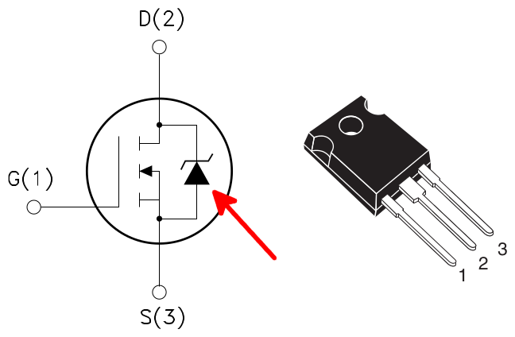
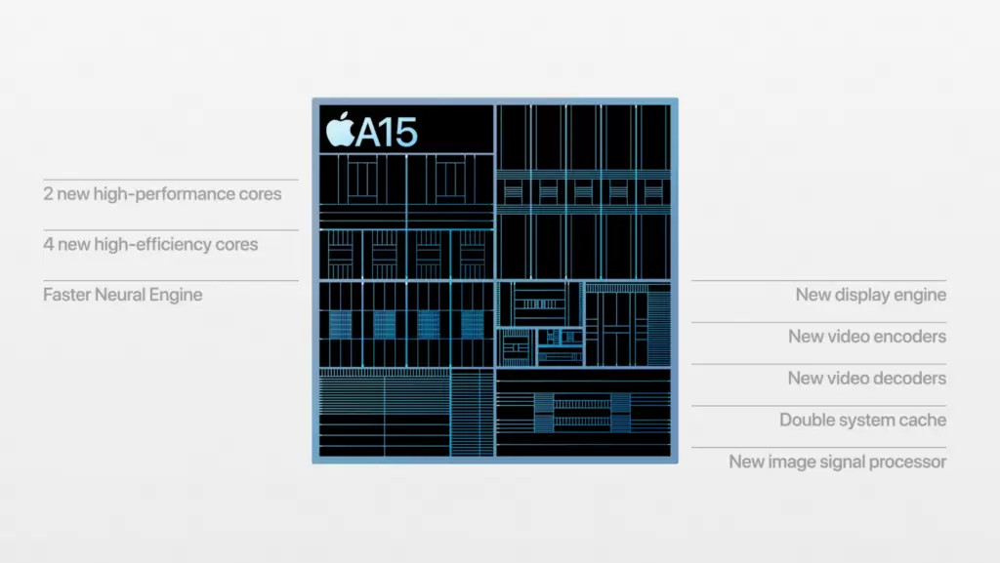

Systèmes sur puce⚓︎

préambule : cours de Première sur l'architecture Von Neumann
1. Loi de Moore et miniaturisation progressive⚓︎
1.1 La Loi de Moore⚓︎
En 1965, Gordon Moore postule que le nombre de transistors présents sur une puce de microprocesseur doublera tous les deux ans.
Cette prédiction s'est révélée étonnamment juste (à quelques approximations près) et les équipements électroniques n'ont depuis jamais cessé de devenir toujours plus performants / miniatures / économes en énergie.

1.2 Évolution de la taille des ordinateurs⚓︎
1.2.1 IBM 650, le premier ordinateur fabriqué en série (1955)⚓︎

Cet ordinateur n'a pas encore de transistors mais des tubes à vide.
1.2.2 IBM 7090, le premier ordinateur à transistors (1959)⚓︎
Le transistor
Le transistor est un composant électronique essentiel : il permet de laisser (ou non) passer un courant électrique. 
1.2.3 Le rôle crucial de la taille des transistors⚓︎
Ainsi que l'avait prédit Moore, c'est la progression du nombre de transistors gravables sur le processeur qui guidera pendant des années l'évolution de l'informatique :
2. Composition d'un pc actuel⚓︎

Chaque composant a un rôle spécifique. Ils communiquent entre eux par des bus de différentes vitesses. Chaque composant est remplaçable, et il est possible d'ajouter de nouveaux composants sur la carte mère qui possède des slots d'extension.
3. Tout un pc sur une seule puce : les SoC⚓︎
3.1 L'intégration de composants différents au sein d'une même puce⚓︎
Le principe d'un système sur puce ou System On a Chip (SoC) est d'intégrer au sein d'une puce unique un ensemble de composants habituellement physiquement dissociés dans un ordinateur classique (ordinateur de bureau ou ordinateur portable).
On peut retrouver ainsi au sein d'une même puce :
- le microprocesseur (CPU)
- la carte graphique (GPU)
- la mémoire RAM
+ éventuellement des composants de communication (WiFi, Bluetooth...)
Avantages et inconvénients d'un SoC 
 Avantages
Avantages
- moindre consommation électrique
- moindre encombrement
- pas besoin de refroidissement
- meilleure sécurité (vue globale sur la sécurité qui n'est plus dépendante d'une multitude de composants)
- moindre coût (forte automisation du processus, gros volumes de production)
 Inconvénients
Inconvénients
- Impossibilité de choisir indépendamment ses composants
- Pas de mise à jour possible / remplacement / ajout d'un composant
- La panne d'un seul composant entraîne la panne totale du SoC
3.2 Exemple : A15 Bionic⚓︎
Observons par exemple la puce Apple A15 Bionic, qui équipe les iPhone 13. Cette puce est fabriquée par TSMC.

Cette puce contient :
- 15 milliards de transistors (gravés à 5 nm)
- un processeur central à 6 cœurs (2 cœurs hautes performances + 4 cœurs plus économes en énergie)
- un GPU (processeur dédié uniquement au calcul du rendu graphique) de 5 cœurs.
- une puce dédiée au Machine Learning (Neural Engine)
4. Des puces dédiées à des tâches spécifiques⚓︎
L'intégration dans un SoC n'est pas totale : il reste des puces dédiées à des tâches très spécifiques qui ne sont pas forcément intégrées dans le SoC.
4.1 Au sein d'un téléphone⚓︎
Ainsi, d'après le site iFixit, on peut retrouver ceci dans l'iPhone Pro 13, au côté de la puce A15 évoquée plus haut :


On voit que (par exemple) qu'il existe une puce spécifique pour gérer l'audio, une puce spécifique pour le module WiFi, une puce spécifique pour le module Modem 5G...
4.2 En électronique «grand public»⚓︎


Ce composant (pouvant être utilisé dans un montage personnel, sur un Arduino par exemple) ne sert qu'à faire des calculs cryptographiques.
4.3 Un principe général⚓︎
Il est important de comprendre que certains processeurs sont optimisés pour un certains types de calcul. C'est le cas par exemple d'une carte graphique, qui excelle dans le calcul de rendus de polygones.
On s'est aperçu que cette aptitude à faire des calculs «bêtes et répétitifs» était parfaite pour faire les calculs mathématiques (inutiles) nécessaires au minage des cryptomonnaies. Les cartes graphiques ont donc été détournées de leur usage originel, à cause de la spécificité de l'implémentation de leur puce.
De même, les calculs sur les réseaux de neurones (essentiels en IA) nécessitent une grande rapidité dans les multiplications de matrices. Pour cette raison, Apple a intégré directement dans son SoC A15 une puce spécalisée dans ces calculs (voir plus haut).
4.4 Conclusion⚓︎
L'orientation actuelle de l'électronique est donc à la fois :
- une intégration toujours plus grande dans des SoC multi-tâches.
- des puces toujours plus spécifiques qui excellent dans un domaine particulier.
5. Exercice⚓︎
Exercice (Polynésie 2021)
Un constructeur automobile intègre à ses véhicules des systèmes embarqués, comme par exemple un système de guidage par satellites (GPS), un système de freinage antiblocage (ABS)...
Ces dispositifs utilisent des systèmes sur puces (SoC : System on a Chip).
Citer deux avantages à utiliser ces systèmes sur puces plutôt qu'une architecture classique d'ordinateur.
Bibliographie / Sitographie
- Numérique et Sciences Informatiques, Terminale, T. BALABONSKI, S. CONCHON, J.-C. FILLIATRE, K. NGUYEN, éditions ELLIPSES.
- Prépabac NSI, Terminale, G.CONNAN, V.PETROV, G.ROZSAVOLGYI, L.SIGNAC, éditions HATIER.
- https://fr.wikipedia.org/wiki/Loi_de_Moore
- https://blog.iakaa.com/lordinateur-fete-ses-60-ans/
- https://www.thewindowsclub.com/history-of-computers
- https://perso-etis.ensea.fr//lorandel/M2_SoC/s1.pdf
- https://www.hawkpointtechnologies.com/about/blog/computer-components
- https://www.tremplin-numerique.org/apple-a15-vs-a14-quoi-de-neuf-dans-la-puce-de-liphone-13
- https://www.distrelec.be/fr/cryptoprocesseur-breakout-atecc608a-sparkfun-electronics-dev-18077/p/30241877